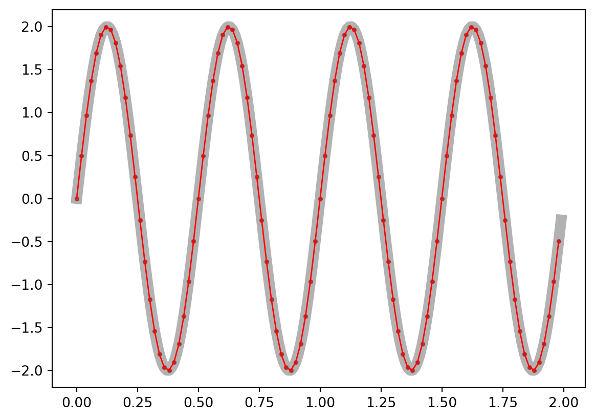
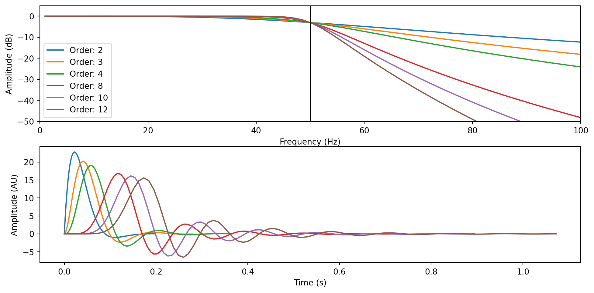

## Modules, directories and import data
import os
from ipywidgets import *
import numpy as np
import matplotlib.pyplot as plt
from scipy import signalEEG Preprocessing Insights
EEG PREPROCESSING - Insights
This page will be a work-in progress project. I will update as the opportunity comes. An interactive Jupyter notebook and a Python script can be found here
The goal of today’s lab meeting is to gain insight into the most common EEG data cleaning (preprocessing) steps. I’m going to use MNE (Python) for a couple of reasons. Firstly, we will introduce an alternative to MATLAB in the hope that we can all move away from it for our studies. Secondly, because the point of today is not to learn the “how-to” preprocess data (how to make a script, what functions to use, how to code, etc…). I believe that is the easiest part, and there are many tutorials around. Instead, we will try to gain a deeper understanding of what we are doing to the data every time we perform specific cleaning steps. I believe this is a more interesting and useful approach, especially in an hour.
We will start by loading the EEG data. This is a pilot recording I have conducted on myself while performing Simon’s task.
Looking at the data
The first thing you should do when starting to work with EEG data is to look at it. This is useful to get accustomed to how clean EEG data looks like, how common artefacts appear (e.g. blinks, muscle noise) and, in general, to ensure that your recording is as you expect it.
raw_data.plot()Downsampling
If the EEG data was collected with a high sample rate (commonly 1000 Hz), then you can decide to downsample the data to a lower sampling rate, like 500 Hz or 250 Hz. To my understanding, the primary reason for downsampling is to reduce the size of the data and speed up the analyses. This was especially important back in the days when computers did not have much memory and computing power. In my opinion, nowadays, this is not really necessary as most computers are able to handle large datasets. Moreover, by downsampling, we remove some information from the data. Unless downsampling is necessary (e.g. it would take months for your PC to preprocess your data), then I would not do it. However, some online discussions suggest that downsampling might be useful to obtain a better ICA decomposition (I don’t think this has been formally tested).
At its core, downsampling is an easy step that simply requires selecting one point for every N. How many N points you skip is defined by the sampling rate you want to obtain. Let’s check this.
# Recorded signal
original_sampling_rate = 100
signal_duration_s = 2
samples_vector = np.arange(0, signal_duration_s, 1/original_sampling_rate)
sine_signal = 2*np.sin(2*np.pi*2*samples_vector)
# Downsample (MODIFY THE NEXT LINE)
new_sampling_rate = 50
number_of_points_to_retain = int((len(sine_signal)/original_sampling_rate) * new_sampling_rate)
step_downsampled_signal = int(len(sine_signal) / number_of_points_to_retain)
downsampled_signal = sine_signal[np.arange(0, len(sine_signal), step_downsampled_signal)]
downsampled_time = samples_vector[np.arange(0, len(sine_signal), step_downsampled_signal)]
plt.plot(samples_vector, sine_signal, "-k", linewidth=8, alpha=0.3)
plt.scatter(downsampled_time, downsampled_signal, c="r", s=6, alpha=0.6)
plt.plot(downsampled_time, downsampled_signal, "-r", linewidth=1)
plt.rcParams["figure.figsize"] = [10, 5]
plt.show()
As you can see, the lower the sampling rate, the lower the resolution of our signal. Although here we see distortions only at very low values, we need to think about how a lower resolution could affect a complex signal as the EEG data. For instance, by downsampling, we are likely to remove information represented as high-frequency oscillatory activity.
NOTE: this is a simplified representation of downsampling. In reality, filters are applied and a sliding average is computed to avoid distortions (eg. aliasing). In other words, do not use this code on your data! Consider what you have observed and what we said about frequencies being distorted, and you can understand why filtering is important here
Now let’s downsample the data.
raw_data.resample(sfreq=250)Filtering
This is an essential step, but I think it’s probably one of the most technical and complex topics in signal processing. Filtering aims to remove parts of the data that are likely to contain artefacts or not to represent brain activity. For the sake of simplicity, we will only discuss high-pass filters and low-pass filterswithout stopping on any specific type of filter (eg. Finite Impulse Response vs Infinite Impulse Response). What we will introduce, though, are some of the parameters you will definitely encounter and will be relevant to your data.
In general, a filter can be described as a mathematical procedure that allows the removal of specific frequencies from the data. It is important to understand this point. When a filter is applied, you modify the frequency information of your signal. Although downsampling partly affects the frequency domain too, with filters we do not trim the data. In other words, the time resolution of your data is left untouched.
Let’s see.
# Create signal as sum of sines
sampling_rate = 1000
signal_duration_s = 2
times = np.arange(0, signal_duration_s, 1/sampling_rate)
signal_frequencies = np.arange(10, 25, 10)
signal_sines = np.sin(2*np.pi*signal_frequencies[0]*times)
for frequency in signal_frequencies[1:]:
signal_sines = np.vstack((signal_sines, np.sin(2*np.pi*frequency*times)))
composite_signal = np.sum(signal_sines, axis=0)
# Define Butterworth lowpass filter
polinomial_numerator, polinomial_denominator = signal.butter(10, 15, fs=sampling_rate)
filtered_half_signal = signal.filtfilt(polinomial_numerator, polinomial_denominator, composite_signal[int(len(composite_signal)/2):])
fig, ax = plt.subplots()
ax.plot(times, composite_signal, "k", linewidth=2, alpha=0.5)
ax.plot(times, np.append(composite_signal[0:int(len(composite_signal)/2)], filtered_half_signal), "r")
ax.vlines(times[int(len(times)/2)], min(composite_signal), max(composite_signal), colors="k", linestyles="dashed", linewidth=3)<matplotlib.collections.LineCollection at 0x29a708ccf20>Here we filtered only the second half of the signal. Let’s see it’s time-frequency decomposition.
# Replace second half of signal with filtered version
composite_signal[int(len(composite_signal)/2):] = filtered_half_signal
fft_window = signal.windows.blackman(500)
fft_hop = int(len(fft_window)/20)
SFT = signal.ShortTimeFFT(fft_window, hop=fft_hop, fs=sampling_rate, scale_to="magnitude", mfft=2**11)
Sx = SFT.stft(composite_signal) # perform the STFT
fig,ax = plt.subplots()
ax.imshow(abs(Sx), origin="lower", aspect="auto", cmap="viridis", extent=SFT.extent(len(composite_signal)))
ax.hlines((10, 20), 0, (2, 1), color="gray", linewidth=3, alpha=0.5)
ax.vlines(1, 0, 30, colors="r", linestyles="dashed", linewidth=3)
ax.set_ylim((0, 30))
ax.set_xlim((0, 2))(0.0, 2.0)We can see here that the 20 Hz component of our signal disappears after the filter is applied.
Cool, now to the technical part. As I said, filters are not so straightforward, and when you decide which one to apply to your data, you should pause and think about it. To begin understanding why this is the case, let’s look at how a commonly used filter (Butterworth) attenuates frequencies.
cutoff_frequency = 50
filter_orders = [2, 3, 4, 8, 10, 12]
fig, axs = plt.subplots(2, 1)
plt.tight_layout()
for filter_order in filter_orders:
b,a = signal.butter(filter_order, cutoff_frequency, "low", analog=True)
w,h = signal.freqs(b, a)
t, y = signal.impulse((b,a))
axs[0].plot(w, 20 * np.log10(abs(h)), label=f"Order: {filter_order}")
axs[0].vlines(50, -50, 5, colors="k")
axs[0].set_ylabel("Amplitude (dB)")
axs[0].set_xlabel("Frequency (Hz)")
axs[0].set_xlim((0, 100))
axs[0].set_ylim((-50, 5))
axs[0].legend()
axs[1].plot(t, y)
axs[1].set_xlabel("Time (s)")
axs[1].set_ylabel("Amplitude (AU)")
To understand filters and the information you might find online or published in some papers, we need to define a few terms. Note that these terms should be reported in a publication to ensure the correct replicability of your analyses - though not many people do this.
- Cutoff Frequency: frequency threshold from/to where (ideally) the filter starts acting
- Passband: Frequency region (ideally) unaffected by the filter
- Stopband: Frequency region (ideally) suppressed by the filter
- Transition band: Frequency region where the filter attenuates the amplitude without complete suppression
- Lowpass filter: a filter that reduces/suppresses high frequencies (beyond the defined cutoff + passband)
- Highpass filter: a filter that reduces/suppresses low frequencies (before the cutoff + passband)
NOTE: if you use EEGLAB default filter function pop_eegfiltnew, you will need to provide, at least, the passband limits and not the cutoff frequency!

As you can see here, by increasing the filter length, we make the filter less steep, and we push the ringing outside the transition band. The downside is that we are now keeping more frequencies that are beyond the cutoff. By modifying the filter length, as well as the type of filter and its specific parameters, we can modify how long the transition band is, how steep the filter is and how many of those ripples you can see above we get.
Talking about ripples. You need to be aware of them as they can introduce artefacts in your data (the data itself can become “ripply”). Usually, if they appear in the stopband, you should be mostly fine, as their effects will affect a dimension of the data you supposedly are not interested in (otherwise, why would you filter out frequencies you want to analyse). However, you need to pay attention to filters that introduce ripples in the passband. Below, you can see that the rectangular filter induces some oscillations before the transition band (<50 Hz). Because these ripples affect frequencies that will be contained in your filtered data, they will alter the data itself.
# FIR
filter_types = ["hamming", "kaiser", "blackman", "rectangular"]
filter_lenght = 80
fig, ax = plt.subplots()
for filter_type in filter_types:
if filter_type != "kaiser":
fir_coefficients = signal.firwin(filter_lenght, 50, fs=1000, window=(filter_type))
else:
fir_coefficients = signal.firwin(filter_lenght, 50, fs=1000, window=(filter_type, 8))
fir_w, fir_h = signal.freqz(fir_coefficients, fs=1000)
ax.plot(fir_w, 20 * np.log10(abs(fir_h)), label=filter_type)
ax.set_xlim((0, 200))
ax.legend()Usually, you won’t need to create filters from scratch. Most EEG packages (MNE, EEGLAB, Brainstorm, etc…) provide functions with (usually) sensible default values. However, always check your filters and their outputs!
raw_filtered = raw_data.copy().filter(l_freq=0.5, h_freq=None)
raw_filtered = raw_filtered.filter(h_freq=30, l_freq=None)Find bad channels
Lots can happen during an EEG session and one of the most common events is that one or more electrodes do not record the signal properly. The causes for this can vary, incorectly setting up the electode cap, the participant touching the electordes, electrical noise, or some electrodes dying. Independently from the cause, we want to capture these electrode and remove them from the data. If we do not do so, we run the risk to retain or even introduce noise and artefact in the data we will analyse (see Rereferencing to average section).
So, how do we go about finiding bad channels? I don;t have a set answer for this. There are multiple procedures and the choice on how you want to go about this step is yours. The simplest thing you can do is to look at the data manually. If you open the data scroll (or plot the channels), you might be able to pick up channels that have unrealistic high or low voltages throughout the recording or for part of it.

Here, for instance, you can see that one channel oscillates all over the place. That doesn’t look like brain at all and we might want to flag this channel to remove it. If you don’t want to look at every channel, then you need to decide on one or more rules to flag noisy channels. EEGLAB has a pervasive set of algorithms to achieve this (way too many for my taste). Their default now is to use a function called clean_rawdata, which would remove a channel if:
- It is flat for longer than a threshold
- It is not correlated with other electrodes
- It contains excessive high-frequency noise
If you use EEGLAB and decide to use this algorithm, then I would suggest you run it a few times on the same dataset and ensure that the removed channels are always the same (or almost always). In my experience, sometimes the results are not consistent, especially when you have a short recording (short in terms of samples) or a low number of electrodes.
NOTE: I haven’t seen this detail being reported much, but there is one important element (to me) that you should consider when removing channels: their location. One thing is to remove a few channels here and there; another thing is to remove a cluster of adjacent channels. If bad channels are close to each other, there might be a systematic issue that affects that cluster specifically. Moreover, it would be dangerous to proceed with their reconstruction through interpolation (next section).
Interpolation
Once you have removed bad channels, what should you do? If you are a purist, you might want to leave these channels out. Hopefully you do not need them for your analyses. Otherwise, you could reconstruct them using the information in the other channels. This step is called interpolation, and it is based on the idea that EEG electrodes contain data that is correlated. That is, two nearby channels partly pick up the same signal. Thus, if we remove one channel, we can use the other to reconstruct what the signal in the removed channel should look like.
For EEG data, this is usually done through a spherical interpolation, a procedure that projects the channels to the surface of a sphere and then uses the information contained in the retained channels to reconstruct the removed one.